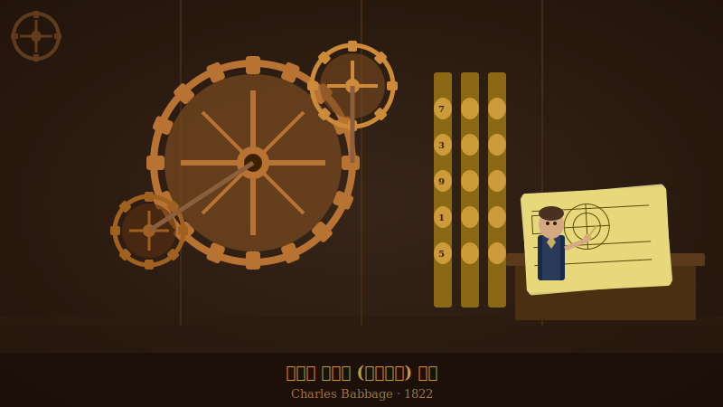

1822
기계식 계산기(차분기관) 설계 · 찰스 배비지
밤마다 검산에 시달리던 수학자 찰스 배비지가 “이제 기계가 좀 해 줬으면”이라며 설계도를 펼친 순간입니다.

19세기 영국의 수학자 찰스 배비지는 사람이 직접 손으로 계산하며 생기는 잦은 오류에 지쳐 있었습니다. 그는 "기계가 이 지루하고 반복적인 계산을 대신할 수 있다면 얼마나 좋을까?"라는 질문을 던졌습니다. 이를 해결하기 위해 톱니바퀴의 회전을 이용해 복잡한 수학 표를 자동으로 계산해 내는 거대한 기계를 설계했습니다. 비록 당시의 기술적 한계로 기계를 완성하지는 못했지만, 그의 아이디어는 '인간의 두뇌 노동을 기계가 대신할 수 있다'는 현대 컴퓨터 공학의 위대한 첫걸음이 되었습니다.
배비지가 설계한 '차분기관(Difference Engine)'은 복잡한 다항식을 단순한 덧셈의 반복으로 변환하여 계산하는 기계식 계산기였습니다. 금속 기어와 축의 물리적인 움직임을 통해 숫자를 표현하고 연산을 수행하도록 고안되었습니다. 이 설계는 비록 당대에 실물로 완성되지는 못했으나, 연산 과정을 자동화하고 기계에 위임한다는 개념을 정립함으로써 훗날 컴퓨터 아키텍처 발전의 중요한 사상적 토대를 제공했습니다.